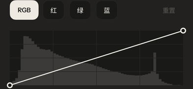
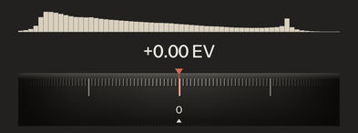
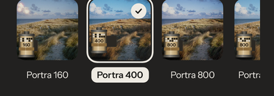
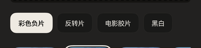
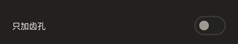
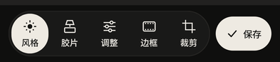

9:41▴ ▮▮▮ 86%
原图
胶片Kodak Portra 400 · Kodak Supra Endura
最近彩色负片反转片黑白
9:41▴ ▮▮▮ 86%
开
9:41▴ ▮▮▮ 86%
直方图
现在
改后
曲线
现在

改后 · 拖点，点空白处加点
相机拨盘（调整）
现在

改后 · 可以拖
暗盒（胶片卡片）
现在

改后 · 点一张
分类按钮
现在

改后 · 按一下
开关
现在

改后 · 拨一下
只加齿孔
保留拍摄位置
工具栏与保存
现在

改后
风格
胶片
调整
边框
裁剪